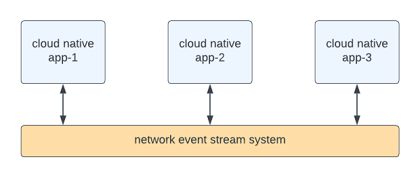

Mercury 3.0 for Node.js
Reference engine for building "Composable architecture and applications".
Welcome to the Mercury project
The Mercury project is created with one primary objective -
to make software easy to write, read, test, deploy, scale and manage.
Mercury 3.0 for Node.js inherits core functionality from the original Mercury Java project. For examples,
- REST automation - you can create REST endpoints by configuration instead of code
- In-memory event system - we extend the standard Node.js EventEmitter to support high concurrency and ease of use
- Event API endpoint - this facilitates inter-container communication using events over HTTP
To get started, please refer to the Developer Guide.
June, 2023
Introduction to composable architecture
In cloud migration and IT modernization, we evaluate application portfolio and recommend different disposition strategies based on the 7R migration methodology.
7R: Retire, retain, re-host, re-platform, replace, re-architect and re-imagine.
The most common observation during IT modernization discovery is that there are many complex monolithic applications that are hard to modernize quickly.
IT modernization is like moving into a new home. It would be the opportunity to clean up and to improve for business agility and strategic competitiveness.
Composable architecture is gaining visibility recently because it accelerates organization transformation towards a cloud native future. We will discuss how we may reduce modernization risks with this approach.
Composability
Composability applies to both platform and application levels.
We can trace the root of composability to Service Oriented Architecture (SOA) in 2000 or a technical bulletin on "Flow-Based Programming" by IBM in 1971. This is the idea that architecture and applications are built using modular building blocks and each block is self-contained with predictable behavior.
At the platform level, composable architecture refers to loosely coupled platform services, utilities, and business applications. With modular design, you can assemble platform components and applications to create new use cases or to adjust for ever-changing business environment and requirements. Domain driven design (DDD), Command Query Responsibility Segregation (CQRS) and Microservices patterns are the popular tools that architects use to build composable architecture. You may deploy application in container, serverless or other means.
At the application level, a composable application means that an application is assembled from modular software components or functions that are self-contained and pluggable. You can mix-n-match functions to form new applications. You can retire outdated functions without adverse side effect to a production system. Multiple versions of a function can exist, and you can decide how to route user requests to different versions of a function. Applications would be easier to design, develop, maintain, deploy, and scale.
Composable architecture and applications contribute to business agility.
Building a composable application
Microservices
Since 2014, microservices architectural pattern helps to decompose a big application into smaller pieces of “self-contained” services. We also apply digital decoupling techniques to services and domains. Smaller is better. However, we are writing code in the same old fashion. One method is calling other methods directly. Functional and reactive programming techniques are means to run code in a non-blocking manner, for example Reactive Streams, Akka, Vertx, Quarkus Multi/Uni and Spring Reactive Flux/Mono. These are excellent tools, but they do not reduce the complexity of business applications.
Composable application
To make an application composable, the software components within a single application should be loosely coupled where each component has zero or minimal dependencies.
Unlike traditional programming approach, composable application is built from the top down. First, we describe a business transaction as an event flow. Second, from the event flow, we identify individual functions for business logic. Third, we write user story for each function and write code in a self-contained manner. Finally, we write orchestration code to coordinate event flow among the functions, so they work together as a single application.
The individual functions become the building block for a composable application. We can mix-n-match different sets of functions to address different business use cases.
Event is the communication conduit
Cloud native applications are deployed as containers or serverless functions. Ideally, they communicate using events. For example, the CQRS design pattern is well accepted for building high performance cloud native applications.
Figure 1 - Cloud native applications use event streams to communicate

However, within a single application unit, the application is mostly built in a traditional way. i.e. one function is calling other functions and libraries directly, thus making the modules and libraries tightly coupled. As a result, microservices may become smaller monolithic applications.
To overcome this limitation, we can employ “event-driven design” to make the microservices application unit composable.
An application unit is a collection of functions in memory and an “event bus” is the communication conduit to connect the functions together to form a single executable.
Figure 2 – Functions use in-memory event bus to communicate
In-memory event bus
For a composable application, each function is written using the first principle of “input-process-output” where input and output payloads are delivered as events. All input and output are immutable to reduce unintended bugs and side effects.
Since input and output for each function is well-defined, test-driven development (TDD) can be done naturally. It is also easier to define a user story for each function and the developer does not need to study and integrate multiple levels of dependencies, resulting in higher quality code.
Figure 3 - The first principle of a function
What is a “function”? For example, reading a record from a database and performing some data transformation, doing a calculation with a formula, etc.
Figure 4 - Connecting output of one function to input of another
As shown in Figure 4, if function-1 wants to send a request to function-2, we can write “event orchestration code” to put the output from function-1 into an event envelope and send it over an in-memory event bus. The event system will transport the event envelope to function-2, extract the payload and submit it as “input” to function-2
Function execution
In event-driven application design, a function is executed when an event arrives as “input.” When a function finishes processing, your application can command the event system to route the result set (“output”) as an event to another function.
Each function is uniquely identified by a "route name". For example, when a REST endpoint receives a request, the request object is sent as an event to a function with a route name defined in the REST automation configuration file called "rest.yaml". The event system will execute the function with the incoming event as input. When the function finishes execution, the event system will route its output to the next function or as an HTTP response to the user.
Figure 5 - Executing function through event flow
As shown in Figure 5, functions can send/receive events using the underlying Node.js event loop.
This event-driven architecture provides the foundation to design and implement composable applications. Each function is self-contained and loosely coupled by event flow.
Performance and throughput
Mercury 3.0 for Node.js is written in TypeScript for improved type safety and IDE integration.
Since Node.js application is usually single threaded, all functions must be executed cooperatively in the "event loop."
However, a traditional Node.js or javascript application can run slower if it is not designed to run "cooperatively". i.e. each method must yield control to the event loop.
Composable applications with Mercury 3.0 enjoy faster performance and throughput because each function is written in a self-contained fashion without dependencies of other functions. When one function requests the service of another function, control is released to the event loop, thus promoting higher performance and throughput than traditional coding approach.
Let's examine this in more details.
Throughput
For higher throughput, the platform core engine allows you to configure "concurrent" workers for each function addressable by a unique route name. The engine is designed to be reactive. This means when one worker is busy, it will not process the next event until it has finished processing of the current event. This reactive design ensures orderly execution.
To handle "concurrent" requests, we can configure more than one worker for a function. To ensure all functions are executed in a non-blocking manner, your function should implement the "Composable" class interface that enforces your function to use the "Promises" or "async/await" pattern. This means your function will release control to the event loop while it is waiting for a response from another service, external REST endpoint or a database.
Performance
If your application is computational intensive, you can increase performance with the Node.js standard "Worker Thread" library. While each function is running cooperatively in the event loop, a function can spin up a worker thread to run CPU heavy operations in the background. This adds true "multi-threading" ability to your application.
There is one limitation. A worker thread and a function in the main event loop can only communicate using a separate messaging tunnel like this:
// in the main thread
worker.postMessage(someRequest);
// in the worker thread
parentPort.postMessage(someResponse);
Mercury reduces this complexity because you can write a function as a gateway to interface with the worker thread.
IMPORTANT - Please be careful about the use of worker threads. Since each worker thread runs in a separate "v8" instance, it may overload the target machine and degrade application performance when you have many worker threads in your application. Therefore, please keep the number of worker threads to a bare minimal.
Event Orchestration
We can construct a composable application with self-contained functions that execute when events arrive. There is a simple event API that we call the “Post Office” to support sequential non-blocking RPC, async, drop and forget, callback, workflow, pipeline, streaming and interceptor patterns.
The "async/await" pattern in Node.js reduces the effort in application modernization because we can directly port sequential legacy code from a monolithic application to the new composable cloud native design.
Earlier we discussed “event orchestration.” We have an accelerator called “Event Script” that provides “event orchestration” in configuration to eliminate the most tedious coding effort. Event Script creates a composable application in three steps: (1) the product owner and architect describe the business transaction as a flow of events, (2) the developer converts the flow chart into event script and (3) write the individual functions for business logic. The system will connect the various functions together and orchestrate the event flow as a single application.
Note: Event Script is outside the scope of this open sources project.
Please contact your Accenture representative if you are interested to use
Event Script to further reduce coding effort for composable applications.
How steep is the learning curve for a developer?
The developer can use any coding style to write the individual functions, no matter it is sequential, object-oriented, or reactive. One may use any favorite frameworks or libraries. There are no restrictions.
There is a learning curve in writing “event orchestration.” Since event orchestration supports the "async/await" pattern, the developer can port existing legacy code to the modern style with direct mapping. Typically, the learning curve is about two weeks. If you are familiar with event-driven programming, the learning curve would be lower. To eliminate this learning curve, the developer may use Event Script that replaces orchestration code with event flow configuration files. Event Script is designed to have virtually zero API integration for exceptionally low learning curve.
Conclusion
Composability applies to both platform and application levels. We can design and implement better cloud native applications that are composable using event-driven design, leading to code that is readable, modular and reusable.
We can deliver application that demonstrates both high performance and high throughput, an objective that has been technically challenging with traditional means. With built-in observability, we can scientifically predict application performance and throughput in design and development time, thus saving time and ensuring consistent product quality.
Composable approach also facilitates the migration of monolithic application into cloud native by decomposing the application to functional level and assembling them into microservices and/or serverless according to domain boundary. It reduces coding effort and application complexity, meaning less project risks.
This opens a new frontier of cloud native applications that are composable, scalable, and easy to maintain, thus contributing to business agility.